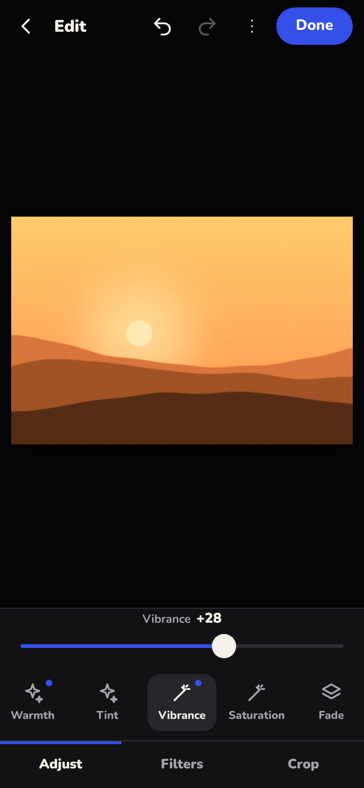
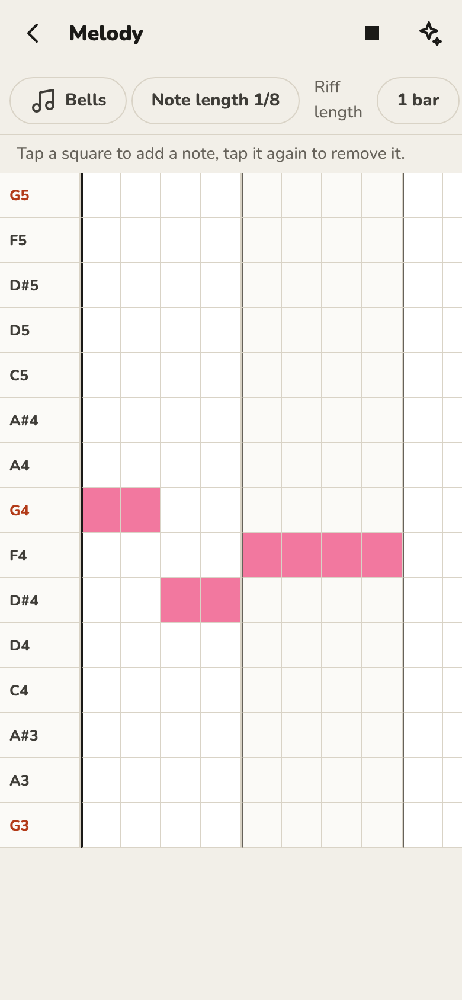

Opia for Android
Opia, in your pocket
Lens, Imagine, Folio and Groove, made for your thumb. Photos, pictures, PDFs and songs, all kept on your phone. No account and no cloud. It only goes online to check for updates, and only if you say so.
↓ four workspaces, one phone
 Lens · photos
Lens · photos
Every photo, rated and developed.
Bring photos in with the phone's own picker. Rate them, keep favourites, then develop: light, colour, filters, crop and straighten. Hold the photo to see the original; it is never changed.
- 14 adjustments and 10 filters
- Crop to fixed shapes, rotate, flip, straighten
- Save a copy straight to your gallery
← warmth +34, vibrance +28

 Imagine · pictures
Imagine · pictures
Layers you move with a finger.
Start from a photo or a blank page, then add text, stickers and drawings. Drag to move, pinch to resize and turn. Every layer stays editable.
- Five fonts, colours and a label behind text
- Photos from Lens come in with their edits
- Export as PNG or JPEG
← pinch, turn, done
 Folio · PDFs
Folio · PDFs
Fill it in and sign it, on the bus.
Open a PDF, fill in its form, sign with your finger, highlight and add text. Turn, reorder or delete pages, then save it or share it straight from the app.
- Real form fields: text, ticks and lists
- Your signature, kept for next time
- Back to the original at any time
← signed!

 Groove · music
Groove · music
A song in one tap. Then make it yours.
Pick a style and Opia writes drums, bass, chords and melody that fit together. Change any part on a grid of steps, swap instruments, and sing over the top.
- The same music engine and real instruments as on Windows
- Six styles, every key and scale
- Record your voice, save as WAV
← it always stays in key
Also in the app
Small things that make it nice to use.
- Light and dark. It follows your phone, or you choose.
- English and Spanish. Switch any time in Settings.
- A back button that makes sense. It closes the top sheet or screen first.
- Names for TalkBack. Every button and slider has a spoken name.
- Saves where you look. Pictures, Music and Download, in an Opia folder.
- Small. About 6 MB, with real instrument samples inside.
Install
Three taps, no store.
Download
On your phone, tap Download. It's one file, Opia.apk, about 6 MB, and it is the installer. This page then shows you what to tap.
Open it
Open the downloaded file. Android asks once to let your browser install apps; allow it.
That's it
Opia is on your home screen. New versions install over the old one, and your work stays.
On a computer? Scan this with your phone's camera.
Opia isn't on the Play Store, so Play Protect may say it doesn't recognise the app. That's what it says about any app installed from outside the store. Only install Opia from this page or its GitHub Releases. It needs Android 10 or newer.
Private by design
Offline, unless you say so.
Your photos, pictures, PDFs and songs stay in the app's own storage on your phone until you save or share a copy. Opia goes online for one thing only: to check GitHub for a new version of itself, after it has asked you and you've said yes. You can turn that off in Settings. The only other thing it asks for is the microphone, when you record in Groove.
no account · no ads · no tracking
FAQ
Questions, answered honestly.
Is it on the Play Store?
Not yet. You install the APK from this page. Play Protect may warn that it doesn't recognise the app; it says that about any app from outside the store.
Which phones does it run on?
Android 10 or newer. It's new: it has been built and tested at phone size in a browser, and real phones are the next test. If something looks wrong, open an issue on GitHub with a screenshot.
Is it the same as Opia for Windows?
It shares the look, the names and Groove's music engine, but it's its own app, made for touch. Lens, Imagine and Folio do less than on Windows, and there's no Motion (video) yet.
How do updates work?
The first time you open it, Opia asks whether it may check GitHub for new versions. If you say yes, it checks once a day (or when you tap Check for updates in Settings), shows what's new, downloads the update and hands it to Android's installer. You tap Install, and your work stays. The first time, Android also asks you to allow Opia to install updates.
Does it sync with my computer?
No. Nothing leaves the phone unless you save or share a copy. Send files to your computer the way you usually do.
Will updating delete my work?
No. New versions install over the old one and keep everything. Uninstalling the app, or clearing its storage, does delete it, so save copies of anything you want to keep.
Is it free?
Yes. There is nothing to pay and no account to make. The project hasn't chosen an open-source licence yet, so for now the code is shared to look at and build, not to reuse.
What can't it do?
HEIC and RAW photos mostly won't open, text added to PDFs only has Western European letters, and voice recordings line up closely but not perfectly. The README lists every limit.
Get Opia for Android
Free, for Android 10 and newer.
Download Opia.apkEvery version is on the Releases page. On a computer instead? Opia for Windows has all five workspaces, Motion included.